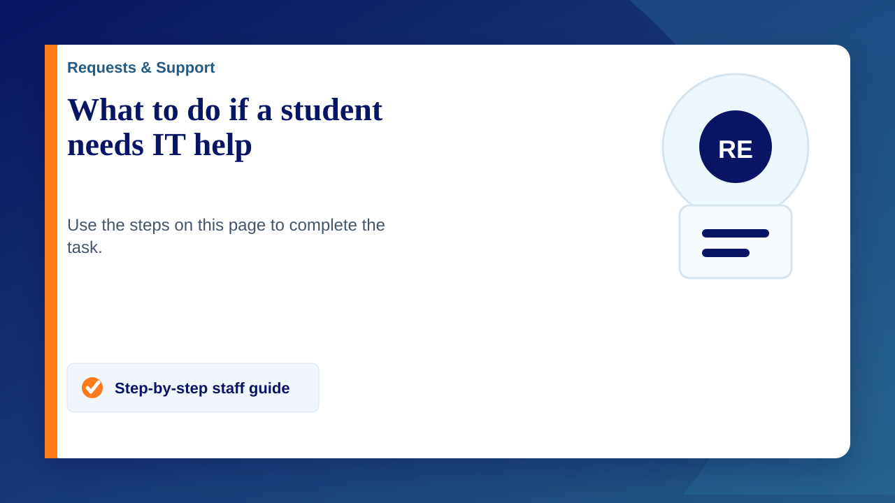

Student support site
Open student support site
Students can use this site for practical guides on laptops, passwords, ClassLink, OneDrive, apps, safety and common fixes.
If a student asks you for help, please guide them to the student site first where appropriate. The aim is to help them try the right guide, gather useful information, and then involve IT if the problem cannot be resolved.
Suggested route for students
- Ask the student to search the student support site for the issue.
- If the issue is about a forgotten password, use the student password reset form. The student guide is also available here: What to do if you forgot your password.
- For quick laptop issues, ask the student to restart the device if it is safe to do so, check power or WiFi, and note any error message.
- If they are still stuck, gather the details below and raise a support request.
Information to collect before raising a request
- Student full name and form group.
- What the student was trying to do.
- What happened instead.
- When the problem started.
- Whether it happens at school, at home, or both.
- The device name, asset label, or room number if relevant.
- The exact error message or a screenshot, if one is available.
- Any checks already tried, such as restarting, checking WiFi, trying ClassLink again, or using the relevant student guide.
When to raise a support request
Raise a support request when the student has tried the relevant guidance and the issue still needs IT, or when the problem affects learning, access to school systems, hardware, safeguarding, or a wider group of students.
Please include the details above in the request. IT will review the issue and get back to the form tutor or the member of staff who raised it.